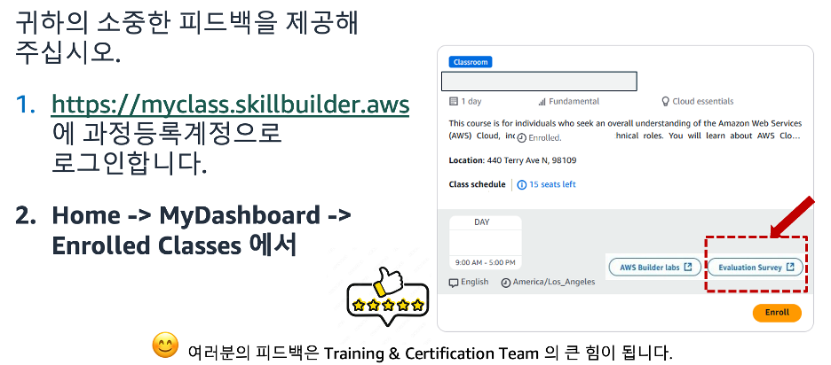

AWS Cloud와 생성형 AI·에이전트의 기본까지 차근차근 짚고 시작합니다.
Vibe 코딩으로 빠르게, Spec 기반으로 체계적으로 앱을 완성합니다.
실습 과정에서 강사가 기술 방향과 문제 해결을 직접 지원합니다.
본 과정은 AWS Cloud와 생성형 AI의 기본 개념을 이해한 뒤, AI 기반 개발 환경인 Kiro로 Vibe 코딩·Steering·Spec 기반 개발을 직접 실습하는 1일 과정입니다. 모듈 1에서 AWS Cloud와 생성형 AI·에이전트·Amazon Bedrock의 기본을 익히고, 모듈 2에서 Kiro의 개념과 핵심 기능(Vibe·Spec·Steering)을 학습한 뒤, 실습에서 직접 애플리케이션을 만들어 봅니다.
| 구분 | 과정 | 주요 내용 |
|---|---|---|
| 모듈 1 | AWS Cloud 소개 | AWS Cloud·글로벌 인프라·핵심 서비스 · 생성형 AI·파운데이션 모델·에이전트 개념 · Amazon Bedrock·모델 접근·액세스 키 |
| 모듈 2 | Kiro 소개 | AI 개발도구 진화·코딩 에이전트 · Kiro IDE/CLI·화면 구성·실행 모드 · Vibe 모드 · Spec-Driven Development · Steering(규칙 설정) |
| 실습 | Spec Driven Development 핸즈온 | Kiro 설치·로그인 · Vibe 코딩으로 이커머스 앱 생성 · Steering으로 규칙 설정 · Spec-Driven으로 챗봇 기능 추가 |
강의 종료 후 설문 조사에 참여 부탁드립니다.
